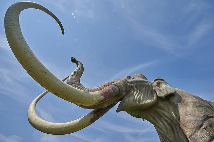

現在地球上には既知の生物だけで175万種の生物が存在していて、未発見の種を含めると3,000万種にものぼるといわれています。下の写真のマンモスのように生命が誕生して以来、多くの種が生まれてそして絶滅してきました。しかし、その絶滅へのスピードは近年加速しています。絶滅した種の数は、1600年から1900年の間は年間0.25種、1901年から1960年の間では年間1種であったものの、1961年から1975年の間には年間1,000種と絶滅のスピードは急激に上昇したといわれています。さらに、現在では年間4万種以上が絶滅しているといわれています。例えば日本では今までに野生の動物では44種が絶滅して、1,171種が絶滅の危機にあるといわれています。また、野生の植物では66種が絶滅し、2,259種が絶滅の危機に瀕しているといわれています。このような生物多様性の危機におちいている原因は主に4つに分けられます。
戦後の経済成長によって原野を切り開き道路や工場，団地を作ったり、干潟を埋め立ててコンビナートを作ったり、森林を伐採して下の画像のようなゴルフ場を作ったりしてきました。このように、他の用途に使用するために自然を切り開くことで生息範囲が縮小していって生育環境が悪化し生物多様性に大きな影響を及ぼします。他にも家庭や工場などからの排水によって、川や海などの水質が悪化し魚介類や藻類などの水生生物にも影響を及ぼしています。更に、観賞用や商業目的での乱獲や盗掘など直接的な生物の捕獲・採取による影響も生物多様性に大きな影響を及ぼしています。
これらの現状を改善するには、我々が日常生活をするうえで生態系を損ねてしまうような行為が本当に必要であるかどうかをよく吟味したうえで行動に移すことが重要だと考えられます。
人間の生活様式の変化に伴い農林水産業が衰退し、自然に対する人間の働きかけが減ったことが影響を及ぼしています。燃料革命や産業構造の変化に伴い、里山や草原が利用されなくなった結果、その環境特有の生物が絶滅の危機に瀕しています。例えば、草原では畜産業の衰退に伴い野焼き・採草・放牧などの管理が減少したため、藪化が進行し草原性の野生動物が急速に減少しています。里山では、放置竹林が拡大していて、樹林の荒廃や地域生態系の貧相化が進んでいます。また、農業や林業の若い世代の担い手不足により、管理されていない農地などが増加し本来、水田や水田周辺の野生動物が減少しています。また、実際の農地だけの問題ではなく農業に利用されていた湿地やため池も例外ではなく、次第に管理されなくなっていき希少な水生生物や水生昆虫が生息環境を失っている現状があります。
一方、林業でも農業と同じく林業従事者の減少や高齢化が進み森林の適切な整備が遅れている地域が増えています。また、ニホンジカやイノシシなどが増殖しすぎたことにより、農林業や生活環境への被害が増えています。そしてさらに、希少野生動植物の食害や生息域の乾燥化などの環境悪化が生物多様性にも大きな影響を及ぼしています。
オオクチバスやクリハラリスなど、本来日本に生息していなかった侵略的な外来生物もまた生態系に影響を及ぼしています。侵略的な外来生物は、日本の在来種の生物を食べたり、在来種の生息場所やエサを奪い、在来の近縁種と交雑して遺伝的かく乱をもたらして在来種の生態系を崩します。他にも、病原菌の媒介や、生活環境や農作物への被害ももたらします。また、国外の外来生物だけでなく国内の他地域から持ち込まれた生物が、その地域特有の生態系を変えてしまうという心配もあります。日本では2015年4月現在で113種類の動植物が特定外来生物に指定されています。このような外来生物の侵入方法として「外国産緑化樹種の里山などへの侵入」「輸入された飼料や穀物とともに侵入」「飼育動植物の逸出や遺棄」「天敵としての導入」「水生生物の意図的な放流や放流時の混入」などが考えられます。このような外来生物の脅威に対して、侵入の防止と侵入の初期段階での発見と対応が重要となります。
一方、化学物質の中に、殺虫剤や除草剤として使われて生態系に影響を与えるものがあります。例えば、現在日本では人間を含めた動植物に毒性や環境ホルモンとして影響を与える可能性から使用することが禁止になったものに、DDT，BHC，パラチオンといった殺虫剤や、有機スズ化合物で漁業関係の用具の塗料などで主に用いられたトリブチルスズがあります。また、ネオニコチノイドは環境に負担が少ない殺虫剤として農薬など多岐にわたって用いられているますが、ハチ類などの昆虫への影響が恐れられています。
気温や降水量の変化および台風や干ばつの頻発などの気候変動、他にも大規模地震や活火山の活性化などの地球環境の変化は生物多様性に大きな影響を与えると考えられています。地球温暖化によって2100年までに地球の平均気温が3～4℃上昇するとき、日本の気候帯が4～5km/年で北上するという報告があります。つまり、果物などの作物を作るのに適した温度で作物を作っても数年後にはその作物を作るのに適した温度ではなくなるということになります。それが続くといずれ日本では作りにくくなったりして生態系が変わってしまうと考えられます。
地球温暖化による気温の上昇や台風の多発などによる降水量の増加、河川流量の変化などを生物が受け止めきれない場合その生物は絶滅してしまうか、生息場所を変えるためにその場所を離れることになります。これらのように地球温暖化などの地球環境の変化も生物多様性に大きな変化をもたらします。